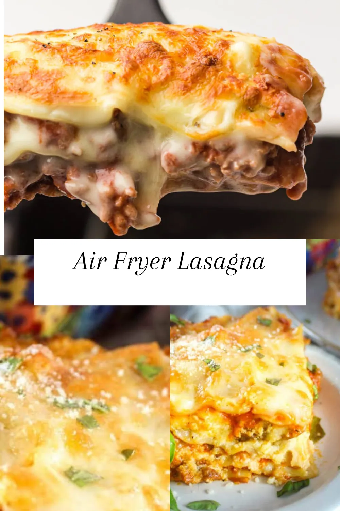

Description
A delicious homemade lasagna with layers of savory Italian sausage, rich marinara sauce, creamy ricotta, and melted mozzarella cheese. A comforting Italian classic made in an air fryer!

Ingredients
- 1/2 pound ground Italian sausage
- 24 oz marinara sauce
- 1 cup ricotta cheese
- 1 egg, lightly beaten
- 2 tablespoons grated Parmesan cheese
- 1 teaspoon garlic powder
- 1/2 teaspoon salt
- 1/2 teaspoon black pepper
- 8 no-boil lasagna noodles
- 6 fresh basil leaves
- 2 cups shredded mozzarella cheese
Steps
- Brown the Italian sausage in a skillet over medium heat. Drain excess fat and stir in the marinara sauce.
- In a bowl, mix ricotta cheese, egg, Parmesan, garlic powder, salt, and pepper.
- Lightly grease an 8×8-inch baking dish with cooking spray.
- Spread a layer of meat sauce in the dish. Add lasagna noodles, ricotta mixture, basil leaves, and mozzarella cheese.
- Repeat the layers until all ingredients are used, finishing with sauce and mozzarella on top.
- Preheat the air fryer to 360°F (182°C) for 5 minutes.
- Cook the lasagna for 30 minutes, then cover with foil and cook for another 20 minutes at 280°F (138°C).
- Let the lasagna rest for 10 minutes before slicing.
- Garnish with Parmesan cheese and fresh basil. Serve and enjoy!